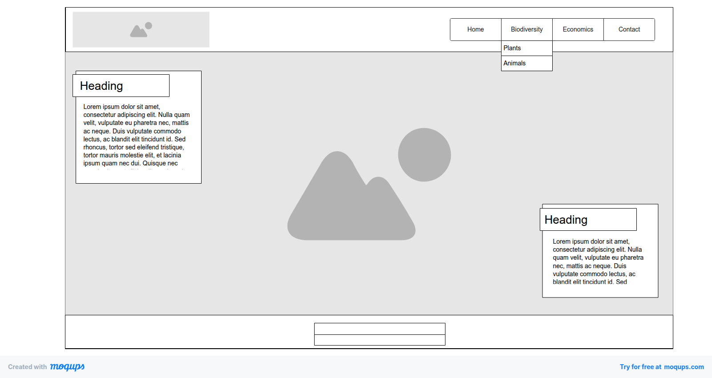

Site name
The name of this website - Coisas do Cerrado - was chosen to clearly reflect its central objective, which is to promote its biodiversity and raise awareness of the importance of its conservation.
Site purpose
The Cerrado is a region characterized by exceptional biodiversity and considered the richest savanna in the world. It has a seasonal tropical climate with two well-defined seasons (dry and rainy), soils generally poor in nutrients and a wide variety of vegetation. It is of great hydrological importance, as it houses the springs of three of the largest hydrographic basins in Brazil. In recent years, there has been an increase in the frequency of illegal fires and deforestation. As a result, many animal and plant species are entering the process of extinction, compromising the biodiversity that is characteristic of this biome. Given this situation, it is more than urgent to publicize the biodiversity of this biome and the process of destruction to which they are being affected, in order to unite the necessary forces to prevent them from continuing.
Given this context, the site - Coisas do Cerrado - has the purpose serve as an informational and awareness portal for the Cerrado biome. Its scope includes publishing detailed articles on biodiversity and hydrological importance, raising civic awareness about threats (fires and deforestation), and providing practical resources for ecotourism and conservation engagement efforts.
Scenarios
Scenario 01:
What are the main animal and plant species present in the Cerrado
Mineiro biome?
Scenario 02:
What are the main economics activities realized in region?
Scenario 03:
What are the main threats to biodiversity in the Cerrado Mineiro
biome?
Scenario 04:
What conservation actions are being taken to protect the biodiversity
of the Cerrado Mineiro biome?
Color schema
Primary (Structure) - #434B41 - Dark Olive Green:
Background of the Header and Footer, main Container Elements (like the
navigation bar), and major headings (h1).
Secondary (Accent) - #637A5F - Muted Sage Green:
Backgrounds for Data Cards or featured sections, Action Buttons, and
Visual Accent on links (:hover).
High-Contrast Text - #FFFFFF - White:
Default Text Color on all dark backgrounds (#434B41 and #637A5F) to
ensure High Contrast and readability (WCAG).
Secondary Background - #D7D7D5 - Light Gray/Off-White:
Background of the Main Page Body (body), subtle borders, and
separation lines, lending a soft, terrestrial touch.
Typografia
The site will use a single font family, Lato (Sans-serif), for all text elements. This choice ensures readability, modernity, and a clean, professional aesthetic. The font will be imported via the Google Fonts API.
Usage and Hierarchy:
Body/Main Content:
Lato Regular (400 weight). Used for all paragraph text, lists, and
detailed card information.
Headings (H1, H2, etc.):
Lato Bold (700 weight) or Semi-Bold (600 weight). Used for the main
title, section headings, and card titles to create a clear
visual hierarchy by utilizing varying font weights.
Fallbacks:
Helvetica, Arial, sans-serif. Used if the Lato font fails to load.
Wireframe
The home page layout is designed for two main views: Mobile and Wide Desktop.
Mobile View:
The layout uses a single column, prioritizing vertical flow, essential for mobile usability.

Wide Desktop View:
The layout employs a multi-column grid, featuring a main content area for articles and a sidebar for featured data/resources, optimizing screen space.
